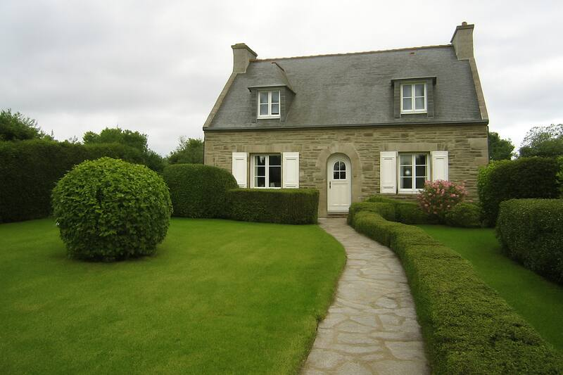
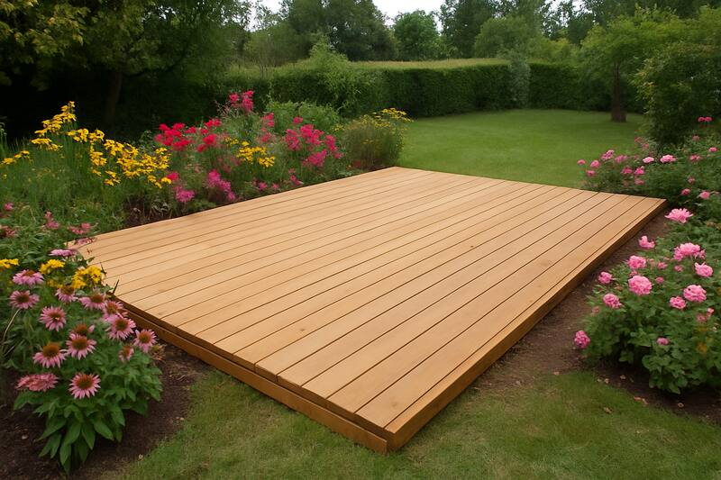
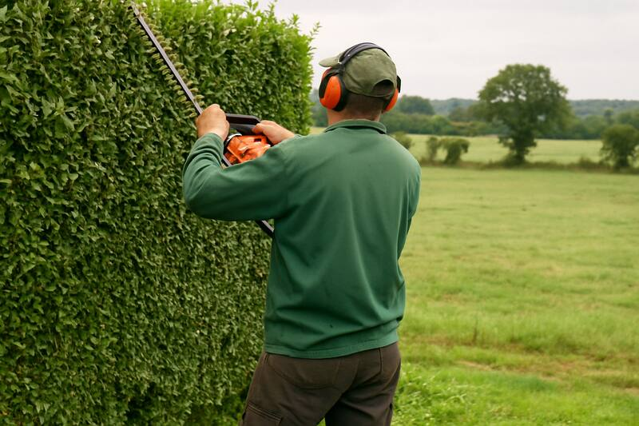

BienvenueJardins Le Goff, entreprise de paysage à Quimper, réalise l'aménagement et l'entretien de vos espaces verts : tonte, taille de haies, élagage, terrasses bois, clôtures, engazonnement. Particuliers et collectivités. 50 % de crédit d'impôt sur l'entretien de jardin.    Nos services
Crédit d'impôtAgréé services à la personne : 50 % de vos dépenses d'entretien de jardin déductibles. |
Contactez-nous :
02 00 00 00 02 Lieu-dit Kerimaginaire, 29000 Quimper Horaires :
Du lundi au vendredi, 8h-18h Formulaire de contact
Nom : Email : Message : Vous êtes le visiteur n° 004817
|